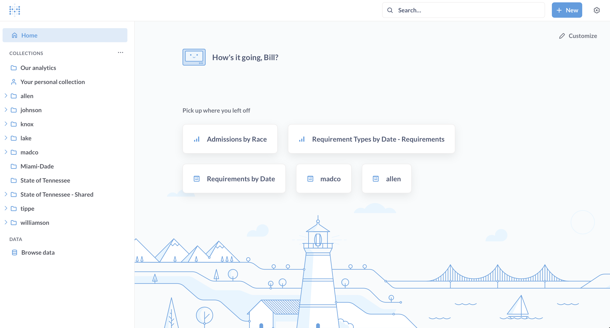
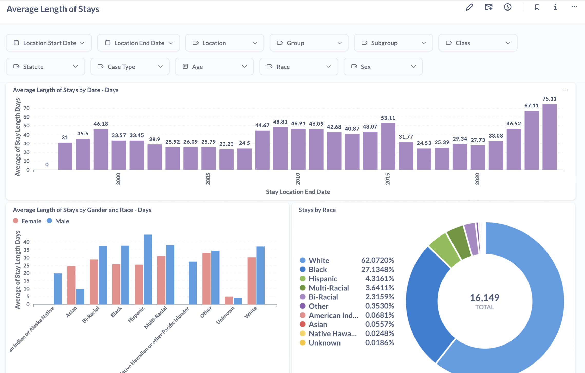
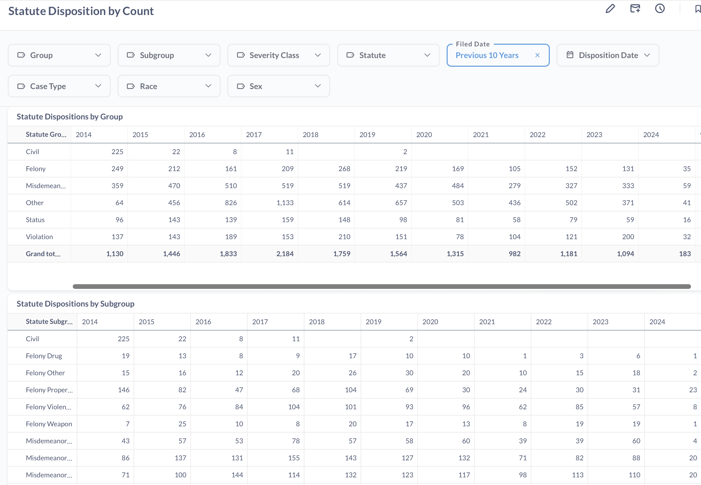
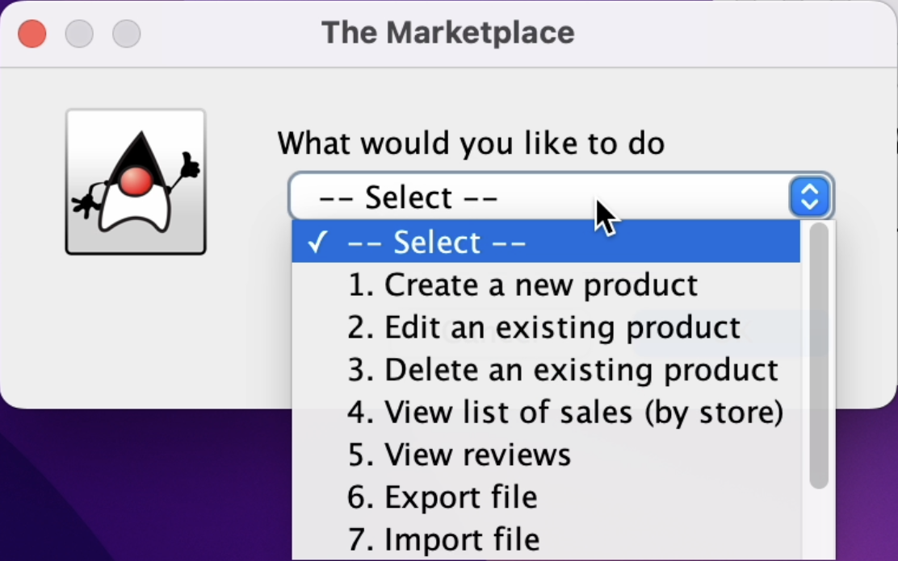
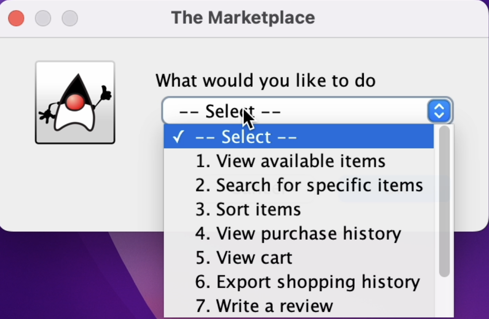

> dashboards



Rennovated and replaced a business intelligence tool, streamlining the data into various dashboards to help decision making within a company. Managed over one million records spread across 100+ counties in Indiana and Tennessee.
> marketplace


Developed a fully functional marketplace to buy and sell items in Java. Created GUI’s, established client-server connections, implemented concurrency, and managed data storage for different accounts with a login system.